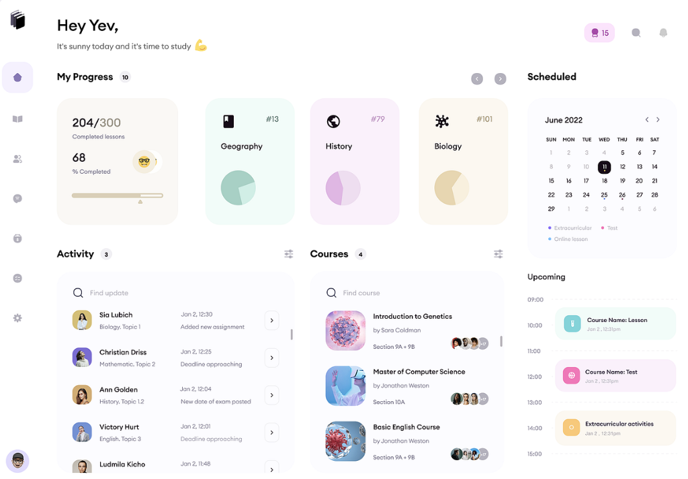
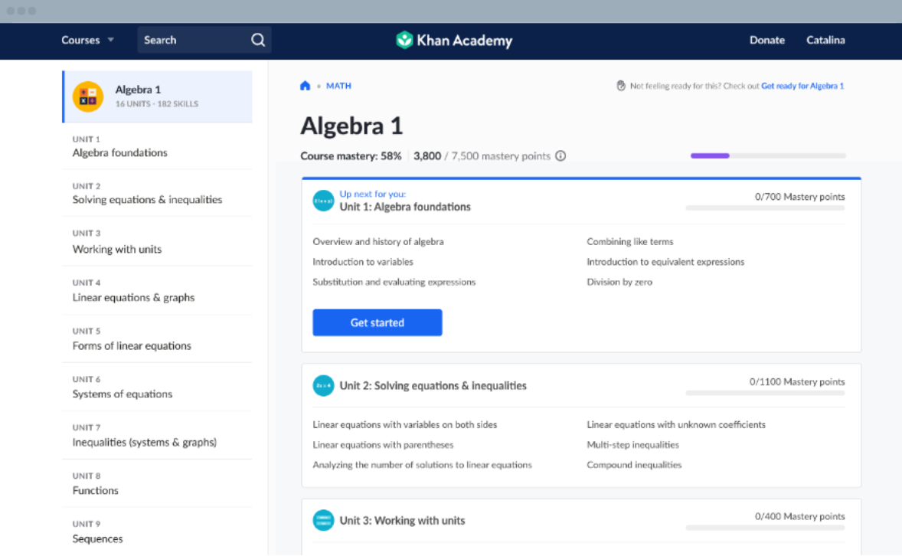
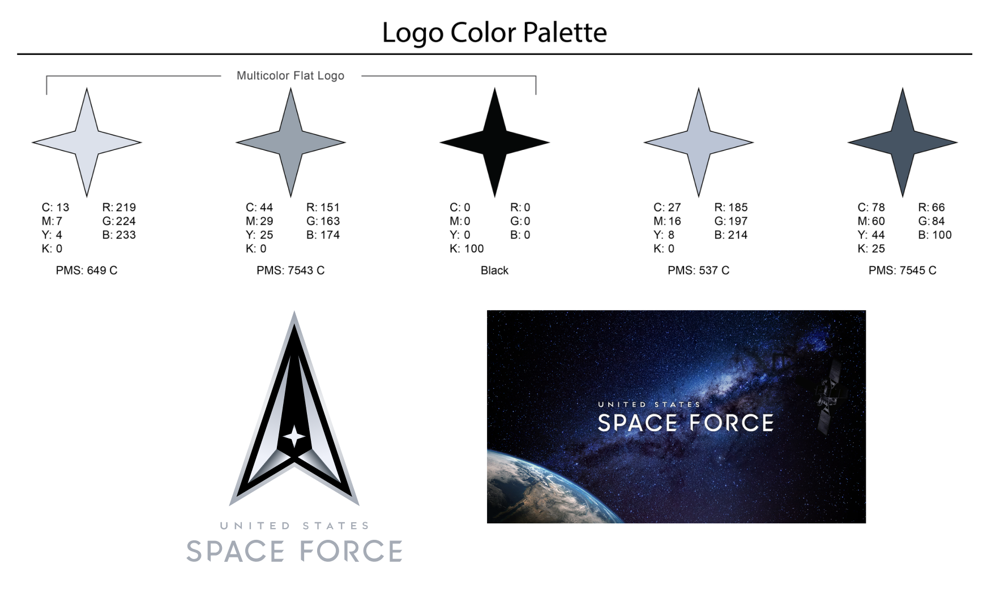

United States Space Force
As the United States Space Force (USSF) continued to evolve its mission and workforce, training programs became increasingly complex, distributed, and difficult to manage. I led the design of an AI-powered learning platform that consolidated training resources, personalized learning experiences, and created a scalable foundation for future workforce development.
problem
USSF personnel did not have a go-to platform to complete mission-critical learning requirements. Training content was:

user research
To understand learning challenges and training workflows, research was conducted with:
key findings
competitive analysis
Our team had connections to contractors working with the Army and Navy. We used their education platforms as a guide, along with other learning platforms like:
Takeaways: Guided and tracked training journeys, AI-powered content suggestions based on program, Visible learner achievements/badges

requirements & goals
USSF Goals
Personnel Goals
ideation
Through my iterations, I focused on 3 main requirements:
To ensure scalability across future learning initiatives, I created a component library (navigation menus, modular cards, progress indicators) and a space-themed style guide.

stakeholder validation
I conducted 4 walkthroughs and task-based usability testing. I asked if users could:
results
Upon log in, users can view Top Training Picks, view in-progress trainings, track their learning plan, and explore other learning modules. The navigation bar provides quick access to learn, plan, and manage their training plans. Plus, the background and design components are floating, space-themed!
Navigating into a specific training page displays additional info, modules included, files/attachments, FAQs, and related training. Users can also view completion status, learning badges, collaborators, and launch the training itself. (P.S. the progress bar is a spaceship…)
Each card component displays training dates, duration, tags, type, and location. Users can enroll in learning sessions and keep track of what they need to complete by a specific deadline.
takeaways
The most effective training experiences are not only repositories of content, they guide users toward why this information is important to learn and how it fits into their role. Systems thinking consisting of experiences, standards, and governance supports future organizational growth. By combining user research, stakeholder goals, and business objectives, the platform evolved from a collection of training tools into a strategic workforce development solution.